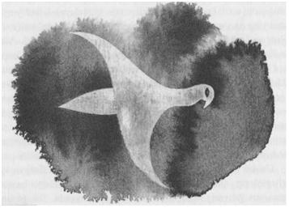

YEDİ: ŞAHİNİN UÇUŞU

Ged uyandı; uzun bir süre, sadece uyanmanın hoş olduğunun bilincinde, yattı; bir daha uyanabileceğini hiç ummuyordu. Işık görmek ise çok daha hoştu; etrafını sarmış olan engin, sade gün ışığını görmek. Sanki o ışığın içinde yüzüyormuş veya sakin sular üstünde bir kayığın içinde sürükleniyormuş gibi geldi ona. En sonunda bir yatakta olduğu fark etti; fakat şimdiye kadar uyumadığı cinsten bir yatakta. Tahtadan yontulmuş, dört uzun bacak üzerine oturtulmuş bir çerçevenin içindeki yatağın örtüleri de, içleri kuştüyü dolu büyük ipek torbalardı; zaten o yüzden Ged kendisini yüzüyor zannetmişti; tüm bunların üzerine de hava akımlarına karşı koyu kırmızı bir perde örtülmüştü. Her iki yandan perdeler geriye doğru bağlanmıştı; Ged duvarları ve zemini taşla örülmüş odaya göz gezdirdi. Odada bulunan üç yüksek pencereden, hafif kış güneşi altında uzanan, orası burası karlarla kaplı çıplak ve boz renkli bataklıkları gördü. Oda, yerden yüksek olmalıydı, çünkü toprağın epeyce üstünde bulunuyordu.
Ged yatakta doğrulurken, kuş tüyünden saten yorganı yana doğru kayınca, soylular gibi, ipek ve yaldızlı kumaştan yapılmış bir tünik giymekte olduğunu fark etti. Yatağın yanındaki bir sandalyede, onun için hazırlanmış, yumuşak deriden çizmeler ve kenarları pellawi kürküyle çevrilmiş bir cübbe duruyordu. Bir süre için büyülenmiş gibi afallamış ve sakin bir şekilde durduktan sonra, elini asasını almak için uzatarak ayağa kalktı. Ama asası yoktu.
Sağ elinin tüm parmaklarının yanıkları, merhemlenmiş ve sarılmış olmasına rağmen, ağrıyordu. O anda elinin ağrısını ve vücudunun sızılarını hissetti.
Bir süre daha kıpırdamadan durdu. Sonra fısıldadı; ama pek yüksek sesle ve umutla değil: "Hoeg... Hoeg..." Çünkü hareketli, sadık, küçük hayvan; onu bir zamanlar ölümün krallığından geri çağıran küçük ruh da yoktu. Bir gece önce koşarken, hâlâ yanında mıydı acaba? Peki bunlar dün gece mi olmuştu, birkaç gece önce mi? Bilemiyordu. Kafasında bunlar belirsiz ve karanlıktı: Gebbet, yanan asa, koşmaca, fısıltılar, kapı. Bunların hiçbiri net değildi. Şu anda yaşadıkları bile net değildi. Bir kez daha, ümitsizce hayvanının ismini fısıldadı ve gözleri yaşla doldu.
Uzaklarda bir yerde bir çan çaldı. İkinci bir çan, hemen odanın dışında tatlı bir çıngıltıyla çaldı. Odanın öbür ucunda, arkasında bir kapı açıldı ve içeriye bir kadın girdi. "Hoşgeldin Çevik Atmaca," dedi gülümseyerek.
Genç ve uzun boyluydu; beyazlar ve simler içindeydi. Gümüşten bir ağ, bir şelale gibi omuzlarına dökülen siyah saçlarını süslüyordu.
Dimdik duran Ged kadını selamladı.
"Sanırım beni hatırlamıyorsun."
"Hatırlamak mı, hanımefendi?"
Daha önce, güzelliğine yaraşacak biçimde giyinmiş, güzel bir kadını, sadece bir kere görmüştü: Roke'taki Gündönümü bayramına kocasıyla beraber gelmiş olan O Leydisi. O Leydisi, zayıf ama parlak bir mum alevi gibiydi, bu kadınsa ayın ondördü kadar güzeldi.
"Ben de hatırlamayacağını tahmin etmiştim," dedi gülümseyerek. "Ama ne kadar unutkan olursan ol, yine de eski bir dost olarak buraya hoşgeldin."
"Burası neresi?" diye sordu Ged, hâlâ gergin bir halde ve hâlâ zor konuşarak. Kadınla konuşmakta zorlanıyordu, fakat gözlerini de ondan alamıyordu. Giymekte olduğu soylu giysiler garip; üzerinde durduğu taşlar alışılmamış; nefes aldığı hava ise yabancı geliyordu. Kendi benliğinde, daha önceki benliğinde değildi adeta.
"Bu şatoya Terrenon Sarayı denir. Eşim olan Benderesk, Terrenon adı verilen kıymetli taşın ve Keksemt Bataklıklarının kıyısından başlayıp, kuzeydeki Os Dağları’na kadar uzanan bu toprakların hükümdarıdır. Bana gelince, bana burada, Osskil'de, onların dilinde Gümüş anlamına gelen Serret diyorlar. Ve sana da Çevik Atmaca dendiğini biliyorum; Bilgeler Adası'nda büyücü olarak yetiştirildin."
Ged yanmış eline bakarak hemen, "Ne olduğumu bilmiyorum. Bir zamanlar gücüm vardı. Sanırım bu gücü kaybettim," dedi.
"Hayır, kaybetmedin; veya belki de, on mislini elde edebilmek için kaybettin. Seni buraya kovalayan şeye karşı burada emniyettesin, dostum. Bu kulenin duvarları çok sağlamdır; sadece taştan da yapılmamıştır üstelik. Burada dinlenip, gücünü yeniden toplayabilirsin. Burada başka bir güç bulabilirsin; bir de elinde yanıp kül olmayacak, başka türlü bir asa. Kötü bir yol, insanı iyi bir sona ulaştırabilir. Şimdi benimle birlikte gel, sana topraklarımızı göstereyim."
Kadın o kadar tatlı konuşuyordu ki, Ged söylediği sözleri duyamıyor, sadece kadının sesinde saklı olan vaadleri izliyordu. Kadının ardından gitti.
Gerçekten de odası, tepenin üzerinden, köpek dişi gibi yükselmekte olan kulenin üst katlarında bir yerdeydi. Aşağı doğru kıvrıla kıvrıla inen mermer merdivenlerden, zengin döşenmiş odalardan ve salonlardan, güneşli bir kış havasında, kuzey, güney, doğu, batı yönlerinde birbiri ardısıra devam edip duran, evsiz, ağaçsız ve tekdüze, alçak ve boz tepelere bakan, yüksek pencerelerin önünden geçerken, Serret'i izledi. Sadece kuzey yönünde, uzaklarda, mavinin üzerindeki beyaz zirveler kendini belli ediyor; güneyde de insan denizin pırıltısının varlığını düşleyebiliyordu.
Hizmetkârlar kapıları açarak, Ged ile hanımlarının geçmesi için kenara çekiliyorlardı. Hepsi solgun renkli Osskilli'ydi. Kadının rengi de açıktı ama onların tersine Hard dilini çok güzel konuşuyordu; hatta Ged'e Gont aksanıyla konuşuyor gibi geldi. O gün, daha sonra, Ged'i, Terrenon Hükümdarı olan kocası Benderesk'in huzuruna götürdü. Bir iskelet kadar renksiz, bir iskelet kadar ince ve karısından üç kez daha yaşlı olan Lord Benderesk, Ged'i soğuk bir kibarlıkla karşılayıp, ona burada konuğu olarak istediği kadar kalabileceğini söyledi. Bundan başka söyleyecek bir şeyi kalmadı; Ged'e yolculukları veya onu oraya kadar izleyen düşmanı hakkında hiçbir şey sormadı. Leydi Serret de bu konuda bir şey sormamıştı.
Eğer bu durum garip olarak yorumlanacak olursa; bu, buradaki garipliklerin ve Ged'in orada bulunuşundaki garipliğin, sadece küçük bir parçasıydı. Ged aklını bir türlü tam anlamıyla toparlayamıyordu. Olayları açık seçik göremiyordu. Bu kule şeklindeki şatoya, talihin bir cilvesiyle gelmişti; yine de talihi, tasarlanmış bir talihti; ya da buraya tasarlanmış bir biçimde gelmiş, ama yine de tasarılar talihin bir cilvesiyle gerçekleşmişti. Ged kuzeye doğru yola çıkmıştı; Orrimy'de bir yabancı ona, yardımı burada aramasını söylemişti; bir Osskil gemisi onu bekliyordu; Skiorh da ona rehberlik etmişti. Bu olanların ne kadarı Ged'i avlayan gölgenin marifetiydi acaba? Yoksa onun hiç ilgisi yok muydu? Avıyla birlikte, o da buraya başka bir güç tarafından mı çekilmişti acaba? Yoksa Ged yemi takip ederken, o da Ged'i takip edip zamanı gelince, silah olarak Skiorh'u ele mi geçirmişti? Öyle olmuş olması gerekirdi, çünkü Serret'in de belirtmiş olduğu gibi, gölge Terrenon Sarayı'na girememişti. Kulede uyandığı andan beri, onun pusuya yatmış varlığının bir izini veya tehdidini hissetmemişti. O halde Ged'i buraya ne getirmişti? Çünkü burası insanların kazara gelecekleri bir yer değildi; düşüncelerinin durgunluğunda bile bunu görmeye başlamıştı. Bu kapılara ondan başka yabancı gelmemişti. Kule, sırtını, en yakın kasaba olan Neshum'a giden yola dönmüş, her şeyden ırak ve tek başına yükseliyordu. Şatoya, ne bir insan geliyor, ne de bir insan buradan gidiyordu. Pencereleri yalnızlığa açılıyordu.
Günler günlere eklendikçe, Ged yalnız kaldığı zamanlar, bu pencerelerden dışarı baktı; durgun, kederli ve üşüyerek... Tüm o halılara, resim dokumalı duvar örtülerine, zengin kürklü giysilere ve geniş mermer şöminelere rağmen, kule her zaman soğuktu. İnsanın iliğine, kemiğine işleyen ve engellenmesi olanaksız bir soğuktu bu. Düşmanıyla nasıl karşılaştığını, yenildiğini ve kaçtığını düşündükçe, Ged'in gönlüne de, soğuk bir utanç yerleşmişti. Düşüncesinde, ortalarında kaşları çatık duran Başbüyücü Gensher ile tüm Roke'lu Ustaları bir araya toplamıştı; Nemmerle de yanlarındaydı, Ogion da, hatta ona ilk büyüsünü öğreten cadı da: Hepsi ona bakıyorlardı, Ged onların güvenlerini boşa çıkardığını biliyordu. Yalvarırcasına, "Eğer kaçmasaydım, gölge beni ele geçirecekti. Zaten Skiorh'un tüm kuvvetini ve benim gücümün bir bölümünü elde etmişti bile. Onunla dövüşemezdim: Adımı biliyordu. Kaçmam gerekiyordu. Büyücü bir gebbet, kötülükler ve yıkım adına hizmet veren, korkunç bir güç demektir. Kaçmam gerekiyordu," diyordu. Fakat, düşüncesinde onu dinleyenlerden hiçbiri, cevap vermedi. Ged de, pencerenin altındaki boş topraklara durmadan ince ince yağan kan seyrederken, içinde büyümekte olan kasvetli soğuğu, sonunda bir çeşit bezginlik dışında hiçbir hissi kalmayıncaya kadar hissetti.
Günlerce, sırf hissettiği bu ıstırap nedeniyle, kimseyle görüşmedi. Odasından çıktığı zaman da sessiz ve gergindi. Şatodaki Leydi'nin güzelliği aklını karıştırıyor; bu zengin, gösterişli, tertipli ve yabancı sarayda, kendisini doğma büyüme bir keçi çobanı gibi hissediyordu.
Yalnız kalmak istediği zamanlarda, onu yalnız bıraktılar; düşüncelerine ve düşen karın seyrine dayanamayacak duruma gelince, Serret genellikle kulenin daha aşağılarında bulunan, meşalelerle aydınlatılmış, duvarları kumaş kaplı, eğri salonların birinde onunla buluştu; oturup konuştular. Şato'nun Leydisi neşesiz bir kadındı, sık sık gülümsediği halde hiç kahkahayla gülmemişti, ama tek bir gülümsemesi bile Ged'i rahatlatmaya yetiyordu. Onun yanında Ged gerginliğini ve utancını unutuyordu. Kısa bir süre sonra, her gün sohbet etmek için buluşmaya, Serret'in yanından ayrılmayan hizmetçi kadınların biraz ilerisinde, kulenin yüksek odalarındaki pencerelerin veya ateşin kenarında oturup, uzun uzun, sessizce, aylakça konuşmaya başlamışlardı.
Bütün gece boyunca sihirler kaynatmış yaşlı bir sihirbaz gibi, Şato'nun karlı iç avlusunda bir aşağı bir yukarı volta atmak için, sadece sabahları dışarı çıkan yaşlı Lord, genellikle kendine ayrılmış odalarda duruyordu. Yemeklerde Ged ile Serret'e katıldığında da, arada bir genç karısına kıskanç ve sert bakışlar fırlatarak, sessiz duruyordu. O zaman Ged kadına acıdı. Serret, kanatları kesilmiş beyaz bir kuşa, kafese kapatılmış beyaz bir ceylana, yaşlı bir adamın parmağındaki gümüş bir yüzüğe benziyordu. Benderesk'in hâzinesinin bir parçasıydı. Şatonun efendisi yanlarından ayrılınca Ged, kadının yanında kalarak, aynı Serret'in kendi yalnızlığını paylaşmış olduğu gibi, Serret'in yalnızlığını paylaşmak istedi.
"Şatonuza ismini veren bu mücevher de neyin nesi?” diye sordu, mum ışığıyla aydınlatılmış oymalı yemek odasında, boşalmış altın tabaklar ve bardakların önünde sohbetlerine devam ederken.
"Onun hakkında hiçbir şey duymadın mı? Çok ünlüdür."
"Hayır. Ben sadece Osskilli soyluların ünlü hâzineleri olduğunu biliyordum."
"Bunun yanında hepsi sönük kalır. Görmek ister misin, gel."
Sanki yaptığı şeyden biraz korku duyuyormuş gibi, alaycı ve cüretkâr bir edayla gülümseyerek, genç adamı salondan çıkarıp kulenin altındaki dar koridorlardan geçirerek, yer altında, daha önce Ged'in görmemiş olduğu, kilitli duran bir kapının önüne getirdi.
Ged'i beraberinde getirmekle bir tehlikeyi göze aldığım belirtircesine, aynı gülümsemeyle Ged'e bakarak, kapıyı gümüş bir anahtarla açtı. Kapının arkasında kısa bir geçitten sonra, genç kadının altın bir anahtarla açtığı bir kapı daha vardı; onun ardında da çözme büyüsünün Yüce Sözleri’yle açtığı başka bir kapı. En son kapıdan geçince, genç kadının elindeki mum, bir hücreye benzeyen küçük bir odayı aydınlattı: Zemini, duvarları ve tavanı kaba taştan yapılmış, mobilyasız, boş bir oda.
"Görebiliyor musun?" diye sordu Serret.
Ged, büyücü gözlerini odada gezdirirken, bakışları zemini meydana getiren taşlardan birine takıldı. O taş da diğerleri kadar kaba ve rutubetliydi; ağır, şekilsiz bir kaldırım taşı; yine de Ged taşın gücünü hissetti, sanki taş yüksek sesle ona sesleniyormuşçasına. Bir an nefesi tıkandı ve hastalanır gibi oldu. Bu, kulenin temel taşıydı. Burası kulenin en merkezi yeriydi ve soğuktu; ısıran bir soğuk vardı. Bu küçük odayı hiçbir şey ısıtamazdı. Bu çok, çok eski bir nesneydi: Eski ve korkunç bir ruh, bu taş blokunun içine hapsedilmişti. Serret'e, evet veya hayır diye cevap vermedi; sadece kıpırdamadan durdu. Bunun üzerine meraklı kaçamak bir bakışla ona bakan Serret, taşı işaret etti. "Terrenon bu. Neden bu kadar kıymetli bir mücevheri, en dipteki hazine odamızda kilit altında tuttuğumuzu merak ediyor musun?"
Ged yine cevap vermedi, afallamış ve bezgin bir şekilde durdu. Kadın onu deniyor olabilirdi; ama, diye düşündü, taşı bu kadar hafife alarak konuştuğuna göre, doğası hakkında bir fikri yok. Ondan korkacak kadar çok şey bilmiyordu. "Bana onun gücünden bahset," dedi en sonunda.
"Bu taş, Segoy dünyanın adalarını Açık Deniz'den çıkarmadan önce yaratılmış. Dünyanın kendisi yaratıldığı zaman yaratılmış ve dünyanın sonuna kadar da varlığını sürdürecekmiş. Onun için zamanın bir anlamı yok. Eğer elini üzerine koyup ona soru sorarsan, senin içindeki güce göre, sana cevap veriyor. Eğer dinlemesini bilirsen, bir sesi olduğunu duyuyorsun. Geçmişte, gelecekte ve zamanımızdaki şeyler hakkında konuşuyor. Sen daha bu topraklara ayak basmadan, senin buraya geleceğini söyledi. Şimdi ona bir soru sormak ister misin?"
"Hayır."
"Sana cevap verecektir."
"Ona soracak bir sorum yok."
"Sana,” dedi Serret kadife gibi sesiyle, "düşmanını nasıl yeneceğini söyleyebilir."
Ged put gibi durdu.
"Taştan korkuyor musun?" diye sordu genç kadın, gözlerine inanamaz gibi hayretle; ve Ged cevapladı, "Evet."
Art arda dizilmiş taş ve büyü duvarlarıyla çevrili odanın ölümcül soğukluğu ve sessizliğinde; genç kadının elinde tuttuğu tek bir mumun ışığı altında, Serret bir kez daha, ışıltılı gözlerle Ged'i süzdü. "Çevik Atmaca,” dedi, "sen korkmuyorsun."
"Ama o ruhla da konuşmayacağım," diye cevapladı Ged; kadının gözlerinin içine bakarak temkinli bir cesaretle konuştu: "Hanımım, o ruh bir taşın içine hapsedilmiş ve taş da, kıymetli olduğu için değil, çok büyük kötülükler üretebileceği için, bir bağlama büyüsü, bir köreltme büyüsü, bir kilit tılsımı ile bağlanıp, çıplak topraklarda üç kere kuvvetlendirilmiş kale duvarlarına hapsedilmiş. Buraya geldiğinizde size ne söylediklerini bilmiyorum. Fakat siz, genç ve merhametli biri olarak, o şeye hiç dokunmamalısınız. Hatta bakmamalısınız bile. Size bir yararı dokunmaz."
"Taşa dokundum. Taşla konuştum, onun konuştuğunu da duydum. Bana bir kötülüğü dokunmuyor."
Genç kadın geri döndü ve kapılardan, koridorlardan geçip meşalelerin aydınlattığı, kulenin geniş merdivenlerine gelince, mumu söndürdü. Birkaç sözle birbirlerinden ayrıldılar.
O gece Ged çok az uyudu. Onu ayık tutan, gölgenin düşüncesi değildi; gölgenin düşüncesi, bu kulenin üzerine oturtulmuş olduğu o Taş'ın görüntüsü tarafından, neredeyse tamamen silinmişti; onu ayık tutan, Serret’in, mum ışığında bir aydınlanan, bir kararan yüzünün hayaliydi. Tekrar ve tekrar kadının gözlerini üzerinde hissetti; taşa dokunmayı reddettiği zaman, o yüzün ne şekil aldığını çıkartmaya çalıştı. Onu hor mu görmüştü, yoksa kırılmış mıydı? Yatağın ipek çarşafları üzerine uyumak için uzandığında buz kesmiş, gece karanlıkta durmadan uyanarak Taş'ı ve Serret'in gözlerini düşünmüştü.
Ertesi gün Serret'i, akşamüstüleri oyun oynadığı veya hizmetkârlarıyla beraber dokuma tezgâhının başına geçtiği, batıya doğru ilerlemekte olan güneşin aydınlattığı gri mermerli, eğri salonda buldu. Ona, "Leydi Serret, sizi gücendirdim. Bunun için çok üzgünüm," dedi.
"Hayır," dedi genç kadın düşünceli düşünceli, sonra tekrar, "Hayır..." dedi. Yanındaki hizmetkâr kadınları uzaklaştırdı. Yalnız kaldıklarında Ged'e dönerek, "Konuğum, arkadaşım," dedi, "sen çok engin görüşlüsün, ama belki de görmen gerekenlerin hepsini göremiyorsundur. Gont'ta, Roke'ta, yüksek büyücülük öğretilir. Fakat her türlü büyücülük öğretilmez. Burası Osskil, Kuzgunların Toprağı: Burası bir Hard ülkesi değil: Burayı büyücüler yönetmezler, burasıyla ilgili pek fazla şey de bilmezler. Burada, Güney'in irfanıyla çözülemeyecek şeyler olur; buradaki şeyler İsimci'nin listesinde bulunmazlar. İnsanlar bilmedikleri şeylerden korkarlar. Fakat senin burada, Terrenon Sarayı'nda, korkmana gerek yok. Daha zayıf bir adam korkabilir elbette. Ama sen değil. Sen, mühürlü odadaki şeyi denetimin altında tutabilecek bir güçle doğdun. Ben bu kadarını biliyorum. Şimdi burada olmanın nedeni de bu."
"Anlayamıyorum."
"Bunun nedeni, kocam Lord Benderesk'in sana karşı, tam anlamıyla açık sözlü olmamış olması. Ben açık sözlü olacağım. Gel, buraya yanıma otur."
Ged, onun yanına, derin ve minderlerle döşenmiş pencere pervazına oturdu. Batmakta olan güneş pencere ile aynı seviyeye gelmiş, onları hiçbir ısısı olmayan ışınlarına boğuyordu. Aşağılarında, bataklıkta, toprağın üzerine örtülmüş beyaz, kasvetli bir tabut örtüsü gibi, erimeden kalmış olan bir gece öncesinin karı, şimdiden karanlıklara gömülüyordu.
Genç kadın son derece yumuşak konuşuyordu. "Benderesk, Terrenon'un Mirasçısı ve Efendisi; ama onu kullanamıyor; onun kendi isteklerine hizmet etmesini sağlayamıyor. Ben de yapamıyorum bunu, ne tek başıma, ne de onunla beraber. Ne onda, ne de bende, güç ve hüner yok. Sende ise ikisi de var."
"Bunu nereden biliyorsun?"
"Taş'ın kendisinden. Senin geleceğinden söz ettiğini söylemiştim sana. Hâkiminin kim olduğunu biliyor. Senin gelmeni bekledi. Daha sen doğmadan, senin gelmeni bekliyordu, kendisine hükmedebilecek birini. Terrenon'dan sorduklarının cevabını alabilen ve ona istediğini yaptırabilen kimse, kendi kaderine de hükmedebilir; ister ölümlü olsun, ister öbür dünyadan, düşmanını ezecek güce sahip olabilir. Geleceği görme, bilgi, zenginlik, topraklar ve Başbüyücü'nün bile burnunu sürtebilecek düzeyde bir büyücülük bilgisi, emrinde olabilir. İster çok, ister az, ne kadar istersen emrinde olacaktır."
Bir kez daha, garip, parlak gözlerini Ged'e doğru kaldırdı; bakışları Ged'in içine işledi, o kadar ki Ged, soğuktan ürperdi. Yine de, genç kadının yüzünde korku vardı; sanki onun yardımını bekliyormuş ama bunu isteyemeyecek kadar da gururluymuş gibi. Ged dehşete düştü. Kadın konuşurken, elini Ged'in elinin üzerine koydu; dokunuşu çok hafifti, eli Ged'in güçlü ve esmer ellerinin üstünde narin ve beyaz kalıyordu. Ged yalvarırcasına, "Serret! Benim, senin zannettiğin gibi bir gücüm yok - bir zamanlar olan gücümü de fırlatıp attım. Sana yardım edemem, sana hiçbir faydam dokunmaz. Fakat şunu bil, dünyanın Kadim Güçleri, insanlar kullansınlar diye yaratılmamışlardır. Onlar hiçbir zaman, bizim ellerimize teslim edilmemişlerdir, bizim ellerimizde sadece zarar verirler. Kötü niyet, kötü sonuç doğurur. Ben buraya çekilmedim; itildim. Beni buraya iten güç beni yok etmeye çalışıyor. Sana yardım edemem."
"Kendi gücünü fırlatıp atan kişi, bazen çok daha büyük bir güçle dolar," dedi Serret gülümseyerek, sanki Ged'in kuşku ve korkuları çocukçaymış gibi. "Seni buraya getiren şey hakkında senden daha fazla şey biliyor olabilirim. Orrimy'de, sokakta, bir adam sana konuşmadı mı? O bir haberci, Terrenon'un bir hizmetkârıydı. O adam da, bir zamanlar büyücüydü ama büyücülerinkinden çok daha büyük bir güce hizmet edebilmek için, asasını attı. Ve sen Osskil'e geldin; bataklıkta elindeki asayla bir gölge ile dövüşmeye çalıştın. Neredeyse biz bile seni kurtaramayacaktık; seni izleyen şey bizim tahmin ettiğimizden daha kurnaz çıktı ve zaten senin gücünün oldukça fazla bir miktarını da çekmişti... Gölgelerle ancak gölgeler savaşabilir. Sadece karanlıklar karanlığı yok edebilir. Dinle Çevik Atmaca! Seni bu duvarların dışında bekleyen o gölgeyi altetmek için, ne istiyorsun o halde?"
"Bilemediğim şeyi istiyorum. İsmini."
"Tüm doğumları, ölümleri, ölümden önceki ve sonraki tüm varlıkları, doğmamışları, ölmeyenleri, aydınlık dünyayı, karanlık dünyayı bilen Terrenon, sana o ismi de söyleyecektir."
"Peki ya bedeli?"
"Bedeli medeli yok. Sana söylüyorum, o sana boyun eğecek, sana kölenmiş gibi hizmet edecek."
Sarsılan ve canı sıkılan Ged, cevap vermedi. Şimdi genç kadın, Ged'in elini avuçlarının içine almış, yüzüne bakıyordu. Güneş, ufku donuklaştıran sisin içine düşmüştü; havanın kendisi de donuklaşmıştı fakat kadının yüzü, Ged’i izleyip onun kararsızlığa düştüğünü gördükçe, zafer ve şükranla aydınlanmaya başladı. Yavaşça fısıldadı: "Sen tüm insanlardan daha kudretli olacaksın, tüm insanların kralı olacaksın. Sen, yöneteceksin ve ben de seninle birlikte yöneteceğim..."
Ged aniden ayağa kalkıp ileri doğru bir adım atınca, Terrenon Lordu'nun, uzun salonun eğrisinin hemen ardında, yüzünde hafif bir tebessümle, kapının yanında durup onları dinlediğini gördü.
Birdenbire Ged'in gözü açıldı; aklı da. Serret'e baktı. "Karanlığı yok eden ışıktır," dedi kekeleyerek, "ışık."
Konuştukça, buraya gerçekten de nasıl çekildiğini, bir yemin peşinden nasıl buraya geldiğini, onu yönlendirmek için korkusunu nasıl kullandıklarını ve bir kez ellerine geçirdiklerinde, onu nasıl ellerinde tutacak olduklarını, kendi sözcükleri önündekileri aydınlatan bir ışıkmış gibi, gördü. Onu gerçekten de gölgeden kurtarmışlardı; Taş'ın kölesi olmadan önce, gölge tarafından ele geçirilmesini istemiyorlardı. İradesi bir kez Taş tarafından ele geçirilince, gölgenin duvarlardan geçmesine izin vereceklerdi, çünkü bir gebbet bir insandan daha iyi hizmetkâr olurdu. Eğer taşa bir kez dokunmuş veya onunla konuşmuş olsaydı, tamamen kaybolmuş olacaktı. Gölge onu tam anlamıyla yakalayıp ele geçirmediği gibi, Taş da onu henüz tam olarak kullanamamıştı. Ged neredeyse boyun eğmişti, ama tam olarak değil. Teslim olmamıştı. Kötülerin, teslim olmamış ruhları ele geçirmeleri çok zordur.
Boyun eğmiş, teslim olmuş iki kişinin arasında duruyor, Benderesk onlara doğru ilerlerken, bir birine, bir diğerine bakıyordu.
"Sana söylemiştim, Serret," dedi Terrenon Lordu kuru bir sesle karısına, "ellerinden sıyrılıp kurtulacağını. Bunlar, senin Gontlu sihirbazların, kurnaz aptallardandır. Sen de aptalsın, Gontlu kadın, hem beni hem onu kandırıp, güzelliğinle ikimize de hâkim olacağını ve Terrenon'u kendi çıkarların için kullanacağını sandığın için. Ama Taş'ın Lordu benim, ben; ve ben sadık olmayan eşlere bak ne yaparım: Ekavroe ai oelwantar..." Bu bir dönüşüm büyüsüydü; Benderesk'in uzun elleri, korkudan sinmiş olan kadını, iğrenç bir şekle, bir domuz, bir köpek veya salyası akan bir acuze biçimine sokmak için, havaya kalkmıştı. Ged ileriye doğru bir adım attı, sadece tek bir sözcük söyleyerek, Lord'un ellerine, kendi elleriyle vurdu ve yere indirdi. Asası olmadığı ve yabancı topraklarda, kötü topraklarda, karanlık güçlerin diyarında olduğu halde, kendi isteğini yerine getirebildi. Benderesk taş kesildi; nefret dolu, gölgelenen gözleri, görmeksizin Serret'e dikilmiş bakıyordu.
"Gel," dedi kadın, titreyen bir sesle, "Çevik Atmaca, gel; çabuk ol, Taş'ın Hizmetkârları'nı çağırmadan..."
Sanki yankı halinde bir fısıltı dolandı kuleyi, yerin ve duvarların taşlarını; yerkürenin kendisi konuşuyormuş gibi, kuru, titrek bir mırıltı.
Ged'in elini yakalayan Serret, onunla birlikte geçitlerden, salonlardan ve döne döne inen merdivenlerden koştu. Günün son, gümüşi ışıklarının, hâlâ yerdeki toprakla karışmış ve ezilmiş karın üzerinde asılı durduğu şatonun avlusuna çıktılar. Şatonun hizmetkârlarından üçü, suratsızca ve sorgulayan bir edayla, sanki bu ikisinin efendilerine karşı yapabilecekleri bir komplodan hep şüphelenirlermiş gibi, yollarını kesti. "Hava kararıyor Leydi," dedi biri, diğeri ise, "Şimdi ata binemezsiniz."
"Çekilin yolumdan pislikler!" diye bağırdı Serret, tıslayan Osskil dilinde. Adamlar geri çekilip, kıvranarak yere çömeldiler, birisi yüksek sesle bağırdı.
"Kapıdan dışarı çıkmamız gerek, başka yol yok. Görebiliyor musun? Bulabilir misin kapıyı, Çevik Atmaca?"
Kadın Ged'in elinden çekiştiriyordu ama, o, yine de durakladı. "Onlara ne büyüsü yaptın?"
"İliklerine kızgın kurşun döktüm; ölecekler. Çabuk diyorum sana, Taş'ın Hizmetkârlarını serbest bırakacak şimdi. Ben kapıyı bulamam - üzerinde büyük bir büyü var. Çabuk!"
Ged kadının ne demek istediğini anlayamadı; çünkü o, kemerli girişin arasından görünen büyülü kapıyı, en az kemerli giriş kadar açık seçik görüyordu. Ged Serret'i, ön avlunun bozulmamış karlarının üzerinden geçirdi ve sonra bir Açma sözcüğü söyleyerek kadını büyü duvarlarıyla kapalı kapıdan çıkardı.
Terrenon Sarayı'nın gümüşi alacakaranlığından ayrılıp kapıdan geçince, Serret değişti. Bataklıkların kasvetli ışığında daha çirkin değildi, ama güzelliğinde hiddetli bir cadı görüntüsü vardı: sonunda Ged onu tanımıştı... Re Albi Lordu'nun kızı; çok zaman önce, Ogion’un evinin yukarısındaki çayırlarda onunla alay eden ve onu, gölgeyi serbest bırakmasına neden olan büyüyü okumaya yollayan Osskilli sihirbaz kadının kızı. Fakat şu anda Ged bunu pek düşünmüyordu; çünkü tüm dikkatiyle etrafına bakınıyor, düşmanını arıyordu; Ged'i büyülü duvarların dışında bir yerlerde beklemekte olan gölgeyi. Hâlâ Skiorh’un ölüsüne bürünmüş bir gebbet olabilir veya çökmekte olan karanlıkta onu yakalamak ve şekilsizliğine Ged'in yaşayan teniyle şekil vermek için saklanmış olabilirdi. Onun yakınlarda bir yerlerde olduğunu hissediyor ama göremiyordu. Etrafına bakınırken, kapıdan birkaç adım ileride, karın içine yarı yarıya gömülmüş, küçük kara bir şey gördü. Eğilerek, o şeyi dikkatle ellerine aldı. Otaktı bu; güzel kürkü kanlara bulanmıştı, küçük bedeni hafif, gergin ve soğuktu avuçlarının içinde.
"Kendini dönüştür! Kendini başka bir şekle dönüştür, geliyorlar!" diye bağırdı Serret, Ged'in koluna asılıp arkalarında, alacakaranlıkta uzun, beyaz bir diş gibi sırıtan kuleyi göstererek. Zemine yakın, yarık şeklindeki pencerelerden kara yaratıklar çıkıyor, uzun kanatlarını çırparak, yavaş yavaş duvarların üzerinden halkalar çizerek, yamaçta savunmasız duran Ged ile Serret’e doğru geliyorlardı. Şatonun içindeyken duydukları titreyen fısıltı, daha da yükselmiş, ayaklarının altındaki toprağın içinde bir sarsıntıya, bir iniltiye dönüşmüştü.
Ged'in gönlündeki nefret derinleşti; onu kandıran, tuzağa düşüren ve avlayan tüm insafsız ve ölü ruhlu şeylere karşı ateşli hiddetin yarattığı bir nefret. "Kendini dönüştür!" diye bağırıyordu Serret çığlık çığlığa; kendisi, bir nefeste söylediği bir büyüyle gri bir martıya dönüşüp uçtu. Fakat Ged eğilip, otakın ölü olarak yattığı yerdeki karın içinden, çelimsizce ve kupkuru çıkan yabani otların arasından, ince uzun bir yaprak aldı. Bu ince uzun yaprağı havaya kaldırdı. Ged yaprakla Gerçek Lisan'da konuşunca, yaprak uzadı ve kalınlaştı; sözlerini bitirdiğinde elinde büyük bir asa tutuyordu, bir büyücü asası. Kanat çırpa çırpa Terrenon Sarayı'ndan gelen kara yaratıklar üzerine çullandıklarında, onlara asa ile vurunca, zehirli güçler asayı kızıl ateşleriyle yakamadılar. Asa sadece, yakmayan ama karanlığı kovan beyaz büyücü ateşiyle tutuştu.
Yaratıklar yeniden saldırmak için geri döndüler: Kuşların, ejderhaların ve insanların varolmadıkları asırlardan kalma, günışığı tarafından çoktan unutulmuş gitmiş, ama Taş'ın yaşlı, kötücül ve kinci gücü tarafından çağrılmış, kaba yaratıklar. Ged'e rahat vermiyor, üzerine çullanıyorlardı. Ged yaratıkların pençelerinin tırpanuçlarını üzerinde hissetti; leş kokularından midesi bulandı. Yabani bir ot ile kızgınlığının karışımından yaratılmış olan asasıyla, yaratıkların darbelerini vahşice savuşturarak onlara vurdu. Sonra aniden tüm yaratıklar, ürkütülüp bir leşten havalanan kuzgunlar gibi, sessizce kanat çırparak Serret'in bir martı olarak gittiği yöne doğru uzaklaştılar. Geniş kanatları ağır gibi görünse de hızlı ilerliyorlardı. Her kanat çırpışlarında, büyük bir mesafe katediyorlardı. Hiçbir martı bu müthiş hızla başa çıkamazdı.
Ged, daha önce bir kere Roke'ta yapmış olduğu gibi, çabucak büyük bir şahin kılığına büründü: adı gibi bir atmacaya değil; bir ok, bir düşünce kadar hızlı uçan bir alaca doğana. Çizgili, keskin ve güçlü kanatlarıyla uçup saldırganlara saldırdı. Hava karardı ve bulutların arasından yıldızlar aydınlanarak parladı. İleride, düzensiz kara bir sürünün, havada bir yerde, bir noktaya dalış yaptıklarını gördü. O siyah kütlenin arkasında, günün kül renkli son ışınları altında solgunlaşan deniz uzanıyordu. Şahin-Ged, hızla, dosdoğru Taş'ın yaratıklarının arasına daldı; suya atılan bir çakıl taşıyla su tanecikleri nasıl sıçrarsa, yaratıklar da Ged içlerine dalınca öyle dağıldılar. Fakat onlar avlarını zaten yakalamışlardı. Birinin gagasına kanlar bulanmış, bir diğerinin pençelerine beyaz tüyler yapışmıştı. Yaratıkların gerisinde solgun denizin üzerinde de, uçan tek bir martı bile yoktu.
Yeniden, demir gagaları alabildiğine açılmış, hantalca ama hızla Ged'e doğru dönüyorlardı bile. Ged, bir kez manevra yaparak onların üzerine çıkınca, bir şahinin cüretkâr öfkesinin aynası olan çığlığıyla bağırdı, sonra da denizin sahilde kırılan dalgalarının, Osskil’in alçak kumsallarının üzerinden ok gibi fırladı gitti.
Taş'ın yaratıkları bir süre daha halkalar çizerek ve gaklayarak uçtuktan sonra, birer birer, bataklıkların üzerinden, adanın içlerine doğru döndüler. Her biri bir adaya, bir yere, bir mağaraya, bir taşa veya bir kuyuya bağlı olduğundan, Kadim Güçler denizleri aşamazlar. Gerisingeri döndü Kule-şatonun yaratıkları; Terrenon Lordu Benderesk'in ağlamakta, belki de gülmekte olduğu yere. Fakat Ged, şahin kanatlarıyla, şahin çılgınlığıyla, yere düşmeyen bir ok misali, unutulmuş bir düşünce gibi, Osskil denizinin üzerinden doğuya, kış rüzgârlarının ve gecenin içine doğru yoluna devam ediyordu.
Sessiz Ogion, sonbahar gezilerinden evine, Re Albi'ye biraz geç dönmüştü. Yıllar geçtikçe daha bir sessiz, daha bir münzevi olmuştu. Aşağıdaki şehirde oturan yeni Gont Hükümdarı, Andradeler'e karşı yapacakları korsanca bir akın konusunda büyücüden yardım istemek için ta Şahin Yuvası'na kadar tırmandığı halde, Ogion’un ağzından bir kelime bile alamamıştı. Ağlarındaki örümceklerle konuştuğu, büyük ağaçları saygıyla selamladığı görülen Ogion, yanından dargın ayrılan Adanın Hükümdarı'na, tek bir sözcük bile söylememişti. Belki Ogion'un içinde de bir dargınlık, bir huzursuzluk vardı; çünkü bütün yazı ve sonbaharı, tek başına dağda geçirmiş ve ancak şimdi, Gündönümü yaklaşırken ocakbaşına geri dönmüştü.
Döndüğü günün sabahı geç kalktı; canı bir bardak ruşvaş çayı çektiği için, evinin aşağısındaki yamaçtaki kaynaktan su doldurmak amacıyla dışarı çıktı. Kaynağın küçük, canlı havuzunun kenarları buz tutmuş, taşların arasına sıkışmış olan, sararmış yosunların üzerine de kırağı düşmüştü. Gün ışımıştı ama güneş daha bir saat dağın haşmetli omuzlarını aydınlatmayacaktı: Deniz kenarındaki kumsallardan dağın doruklarına kadar, tüm batı Gont, bu kış sabahında sessiz, güneşsiz ve berraktı. Büyücü kaynağın yanında durup aşağı doğru inmekte olan topraklara, limana ve denizin gri ufkuna bakarken, üzerinde bir çift kanat çırpınmaya başladı. Kollarından birini hafifçe kaldırarak yukarı baktı. Koca bir şahin, gürültüyle çırptığı kanatlarıyla, aşağı doğru süzüldü ve bileğine kondu. Eğitilmiş bir alıcı kuş gibi, sıkıca tutundu; fakat ne kopmuş bir tasması, ne bir kayışı, ne de bir çıngırağı vardı. Pençeleri Ogion'un bileğini sıkı sıkı kavramıştı; çizgili kanatları titriyordu; yuvarlak altın rengi gözü vahşi ve donuktu.
"Sen bir haberci misin, yoksa haber misin?" dedi Ogion şahine usulca. "Benimle gel..." Ogion konuşurken, şahin ona baktı. Ogion bir süre sustu. "Sanırım bir zamanlar sana ismini ben vermiştim," dedi, sonra büyük adımlarla evine doğru ilerledi ve içeri girdi; kuş hâlâ bileğinde duruyordu. Şahini, ocağın yanına koydu, ateşin sıcaklığında durmasını sağladı; içmesi için su verdi. Kuş suyu içmiyordu. Derken Ogion bir büyü yapmaya başladı, yavaş yavaş, sözlerinden çok elleriyle örüyordu büyüyü. Büyüsü örülüp bitince yavaşça "Ged" dedi, ocağın yanındaki şahine bakmadan. Bir süre bekledi, sonra döndü ve ayağa kalktı; ateşin önünde titremekte olan boş bakışlı genç adamın yanına gitti.
Ged zengin ve alışılmadık görünümlü kürklere, ipeklilere ve gümüşlere bürünmüş, ancak giysileri yırtılmış, deniz suyuyla sertleşmişti. Kendisi de zayıflamış ve kamburlaşmıştı; saçları yaralı yüzüne düşmüştü.
Ogion, Ged'in omuzlarından çamura bulanmış görkemli cübbesini aldı; onu bir zamanlar çırakken yattığı bölmeye götürdü ve oradaki şiltenin üzerine yatırıp, bir uyku büyüsü mırıldanarak yanından ayrıldı. O anda Ged’in bir insan sesine sahip olmadığını bildiği için, onunla hiç konuşmadı.
Ogion çocukken, tüm çocuklar gibi, insanın büyüyle, ister insan, ister hayvan, ister ağaç, ister bulut, istediği kılığa girmesinin ve böylece binbir çeşit varlığa katılmasının, çok eğlenceli olduğunu düşünürdü. Fakat büyücü olduğunda, bu oyunun bedelinin, oynarken gerçekten uzaklaşıp, benliğini kaybetme tehlikesi olduğunu öğrendi. Bir insan, kendine ait olmayan bir biçimde ne kadar uzun süre kalırsa, tehlike de o kadar büyük olurdu. Her sihirbaz çırağı, ayı kılığına girmekten çok hoşlanan Way'li büyücü Bordger’in öyküsünü öğrenir. Büyücü bu işi o kadar sık yapıyormuş ki, içindeki ayı büyümüş ve adam ölmüş; sonunda gerçekten bir ayı olmuş ve ormanda kendi küçük oğlunu öldürünce, halk tarafından yakalanıp öldürülmüş. Ayrıca kimse, İç Deniz'in sularında oynaşan yunuslardan kaçının bir zamanlar kıpır kıpır denizin eğlencesi içinde kendi isimlerini ve bilgeliklerini unutan akıllı insanlar olduklarını bilemez.
Ged, şiddetli bir çaresizlik ve öfke anında şahin kılığına girmişti. Osskil'den uçtuğunda aklında sadece ve sadece tek bir düşünce vardı: Evine dönebilmek için Taş'dan ve gölgeden hızlı uçmak ve bu hain topraklardan kaçmak. Şahinin vahşeti ve öfkesi sanki kendi vahşeti ve öfkesiydi; içindeki uçma isteği de şahinin isteğine dönüşmüştü. Böylece, tenha bir orman gölcüğünde su içmek için alçalıp sonra hemen, arkasından gelmekte olan gölgenin korkusuyla kanat açarak, Enlad'ın üzerinden uçmuştu. Enlad Ağzı denen büyük deniz yolunu geçip, güney yönünden doğuya doğru gitmişti; sağma Oranea'nın belli belirsiz dağlarını, soluna daha da belirsiz Andrad dağlarını, önüne ise sadece denizi alıp, uçmuştu; ta ki sonunda, tam önüne, dalgalar arasında, hep daha yükseğe, hep daha yükseğe kabaran ama hiç değişmeyen bir dalga çıkıncaya kadar: Gont'un beyaz zirvesi. Bu büyü, uçuş süresince, gündüz ve gece, şahinin kanatlarını kullanmış, şahinin gözleriyle bakmış ve sonunda kendi düşüncelerinin ne olduğunu unutarak, sadece şahinin bildiği şeyleri bilmeye başlamıştı: Açlık, rüzgâr ve uçtuğu yön.
Doğru sığınağa uçmuştu. Onu tekrar insan haline sokabilecek, Roke'ta ancak birkaç kişi, Gont'ta ise tek bir kişi vardı.
Uyandığında yabanıl ve sessizdi. Ogion onunla hiç konuşmadı, sadece et ve su verdi ve bıraktı ateşin yanında, büyük, yorgun ve küskün bir şahin gibi suratsızca, kamburunu çıkartıp otursun. Gece olunca uyuyordu. Üçüncü gün, büyücünün ateşi seyretmekte olduğu ocak başına geldi ve "Usta..." dedi.
"Hoşgeldin, oğul," dedi Ogion.
"Sana, ayrıldığım zamanki gibi geri geldim: Bir aptal olarak," dedi genç adam; sesi sertleşmiş, kalınlaşmıştı. Büyücü hafifçe gülümseyerek, Ged'e ateşin yanında, karşısına oturmasını işaret etti ve çay demlemeye başladı.
Kar yağıyordu; burada, Gont'un aşağı yamaçlarındaki ilk kar. Ogion'un pencereleri sıkı sıkı kapanmıştı fakat çatıya yumuşak yumuşak düşen ıslak karın sesini ve evin her tarafına yayılmış olan derin dinginliğini duyabiliyorlardı. Uzun bir süre orada, ateşin yanında oturdular; Ged eski ustasına, Gont'tan Gölge adlı gemiyle ayrıldığı günden beri olanların öyküsünü anlattı. Ogion hiç soru sormadı; Ged sözünü bitirince de, uzun bir süre, sakin ve düşünceler içinde, sessiz kaldı. Sonra ayağa kalkıp masaya ekmek, peynir ve şarap koydu; birlikte yediler. Yemeklerini bitirip odayı topladıktan sonra Ogion konuştu.
"Şu taşıdığın yaralar, acı yaralar oğul," dedi.
"O şeye karşı hiçbir gücüm yok," diye cevap verdi Ged.
Ogion başını salladı ama bir süre daha konuşmadı. Sonunda, "Garip," dedi, "Bir büyücünün büyüsünü kendi topraklarında bozabilecek kadar gücün varmış; orada, Osskil'de. Tuzaklara karşı koyabilecek ve Dünya'nın Kadim Güçleri’nin birinin hizmetkârlarını uzaklaştırabilecek kadar gücün varmış. Sonra Pendor'da, ejderhaya kafa tutacak kadar da gücün varmış."
"Osskil'de talih bana yardım etti, yoksa benim gücüm yoktu," diye cevap verdi Ged; Terrenon Sarayı’nın o düş gibi ölümcül soğuğunu hatırlayınca bir kez daha titredi. "Ejderhaya gelince, onun da adını biliyordum. O kötü şeyin, benim peşimde olan gölgenin bir adı yok."
"Her şeyin bir adı vardır," dedi Ogion. Bunu kendinden o kadar emin olarak söyledi ki Ged, Başbüyücü Gensher'in, onun serbest bırakmış olduğu şey gibi kötü güçlerin adı olmadığı yolundaki sözlerini, Ogion'a tekrarlama cesaretini bulamadı. Gerçekten de Pendor Ejderhası, gölgenin ismini söylemeyi önermişti, ama Ged o öneriye pek güvenmemişti; ne de Serret'in, Taş'ın ona öğrenmek istediği şeyi söyleyeceğine dair verdiği söze inanmıştı.
"Eğer gölgenin bir adı varsa," dedi sonunda, "durup da bana söyleyeceğini sanmıyorum..."
"Hayır," dedi Ogion. "Ama sen de, durup ona ismini söylememiştin. Oysa o, yine de biliyordu. Osskil'deki bataklıkta seni isminle çağırdı, benim sana vermiş olduğum isimle. Bu garip, çok garip..."
Tekrar düşüncelere daldı. En sonunda Ged, "Buraya danışmak için geldim, Usta, sığınmak için değil," dedi. " Bu gölgenin senin üzerine gelmesine izin vermeyeceğim ve eğer burada kalmaya devam edersem, kısa bir süre sonra burada olacaktır. Bir keresinde onu bu odadan kovmuştun..."
"Hayır; o, bunun habercisiydi, gölgenin gölgesi. Şimdi onu kovamam. Bunu yalnız sen yapabilirsin."
"Ama onun karşısında hiçbir gücüm yok. Acaba emin bir..."
Daha sorusunu tamamlamadan sustu.
"Emniyetli bir yer yok," dedi Ogion kibarca. "Bir daha kendini dönüştürme Ged. Gölge senin gerçek benliğini yoketmek için uğraşıyor. Seni bir şahinin benliğine sokarak bunu neredeyse başarmıştı da. Hayır, nereye gitmen gerektiğini bilemiyorum. Ama yine de ne yapabileceğin hakkında bir fikrim var. Sana bunu söylemek zor."
Ged'in suskunluğu gerçeği duymak istediğini vurgulayınca, Ogion, "Geriye dönmelisin," dedi sonunda.
"Geriye mi dönmeliyim?"
"İleri doğru gittiğinde, nereye kaçarsan kaç, seni tehlike ve kötülük bekleyecek; çünkü seni yönlendiren o, senin ne yöne doğru gitmen gerektiğini o seçiyor. Bu yolu sen seçmelisin. Seni izleyeni izlemelisin. Avcıyı avlamalısın."
Ged hiçbir şey söylemedi.
"Seni Ar Nehri'nin kaynağında adlandırdım," dedi büyücü, "dağdan gelip denize akan nehrin kaynağında. Bir adam varmakta olduğu sonu bilir ama bir daha dönüp dönmeyeceğini, ilk başladığı yere geri dönüp o başlangıcı benliğinde tutup tutamayacağını bilemez. Eğer nehrin akıntısında döne döne sürüklenen bir çomak değilse, o zaman nehrin kendisi olmak zorundadır; kaynadığı noktadan, denize döküldüğü yere varasıya, tüm bir nehir. Sen Gont'a döndün, bana döndün, Ged. Şimdi ise gerisingeri dön, ve kaynağın kendisini, kaynağın da önündeki kaynağı ara. Elde etmek istediğin güç umudunu orada bulabilirsin."
"Orada mı Usta?" dedi Ged. Sesinde bir dehşet gizliydi. "Nerede?"
Ogion cevap vermedi.
"Eğer dönersem," dedi Ged, bir süre sonra, "eğer sizin söylediğiniz gibi avcıyı avlarsam, sanırım av fazla uzun sürmez. Onun bütün istediği benimle yüz yüze gelmek. İki kere bunu başardı ve her ikisinde de beni yendi."
"Üçte keramet vardır," dedi Ogion.
Ged, odada bir aşağı bir yukarı, ocaktan kapıya, kapıdan ocağa yürüdü. "Ve eğer beni tamamen yenilgiye uğratırsa," dedi, kendisiyle mi Ogion'la mı tartıştığı belirsiz, "benim gücümü ve benim bilgimi eline geçirerek kullanacak. Şu anda sadece beni tehdit ediyor. Ama eğer içime girip de benliğime sahip olursa, benim aracılığımla çok büyük kötülükler yapacak."
"Bu doğru. Eğer seni yenebilirse."
"Buna rağmen, eğer yine kaçarsam, beni yine bulacaktır... Bütün gücümü kaçmaya harcıyorum." Ged biraz daha dolandıktan sonra birdenbire döndü ve büyücünün önünde diz çökerek, "Büyük büyücülerle beraber yürüdüm, Bilgeler adasında bulundum ama siz benim gerçek ustamsınız Ogion," dedi. Sevgiyle ve ağırbaşlı bir neşeyle konuşuyordu.
"Güzel," dedi Ogion. "Şimdi bunu anladın. Hiç yoktan iyidir. Fakat sonunda, sen benim ustam olacaksın." Ayağa kalkarak ateşi besledi ve çaydanlığı kaynaması için üzerine astı. Koyun postundan yapılmış kabanını giyerek "Gidip keçilerime bakmam gerek; çaydanlığa göz kulak oluver oğul," dedi.
Tekrar, üstü başı kar içinde içeri dönüp de keçi derisinden yapılmış botlarındaki karı, ayaklarını yere vurarak silktiğinde, elinde porsukağacından yapılma, uzun ve kaba bir asa taşıyordu. Kısa akşamüstü boyunca ve yemekten sonra, lamba ışığında, zımpara taşı ve büyücülük hünerleriyle, asa üzerinde çalıştı durdu. Birçok kez, elini asanın üzerinde gezdirdi; sanki herhangi bir pürüzü var mı yok mu anlamak istermiş gibi. Çalıştığı sürece, yavaşça şarkılar söyledi sık sık. Hâlâ yorgun olan Ged dinliyordu; uykusu geldikçe kendisini, Onakçaağaç köyündeki cadının, havası şifalı otların ve tütsünün kokusuyla ağırlaşmış kulübesinde, ateşin aydınlattığı karlı bir gecede, uzun ve yumuşak büyü şarkılarını ve karanlık güçlerle savaşıp onları yenmiş veya yıllarca önce uzak adalarda kaybolmuş olan kahramanların destanlarını dinlerken aklı hayal âleminde gezinen bir çocuk gibi hissediyordu.
"İşte," dedi Ogion, ve bitmiş asayı Ged'e uzattı. "Başbüyücü sana porsukağacı vermiş; iyi bir seçim, ben de bu seçime sadık kaldım. Ben asayı uzun bir yaya benzetmeyi düşünmüştüm ama böylesi daha iyi. İyi geceler, oğlum."
Teşekkür etmek için kelime bulamayan Ged kendi bölümüne giderken, Ogion onu seyretti ve Ged'in duyamayacağı kadar alçak bir sesle, "Ey benim genç şahinim, iyi uçuşlar!" dedi.
Ogion seher vakti, soğukta uyandığında, Ged gitmişti. Sadece, büyücülük usulünce, ocağın taşları üzerine, Ogion okudukça silinen yaldızlı harflerle bir mesaj bırakmıştı: "Usta, ben avlanmaya gidiyorum.”